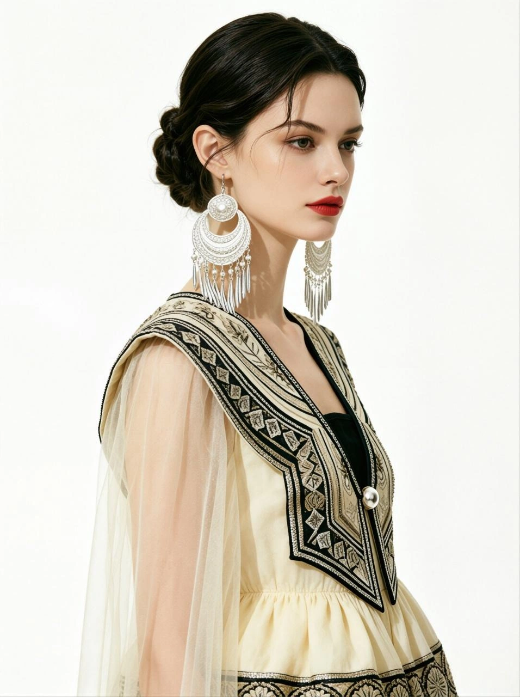
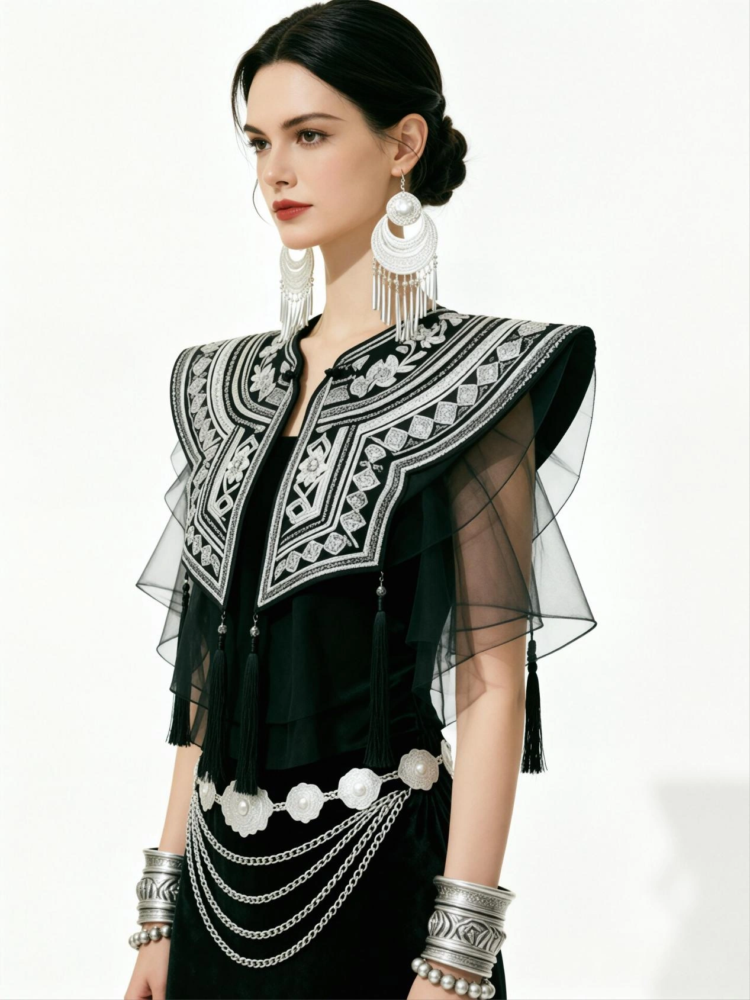
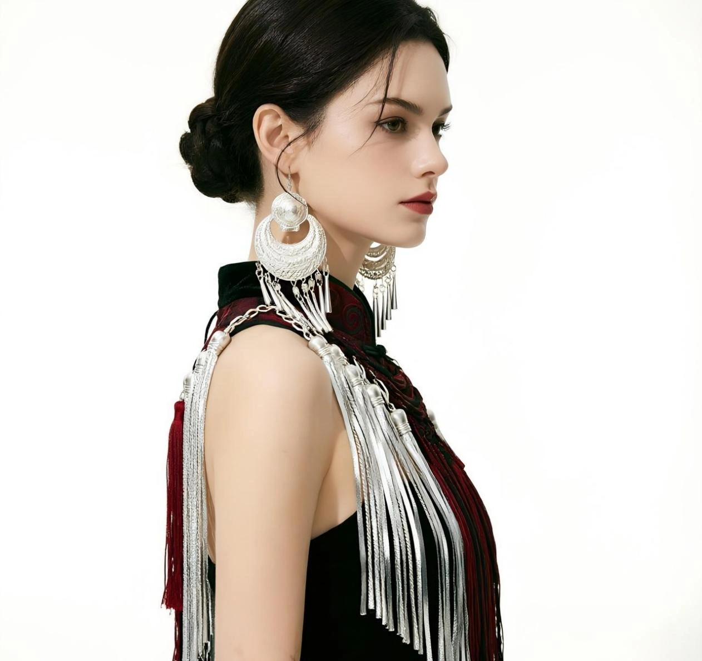
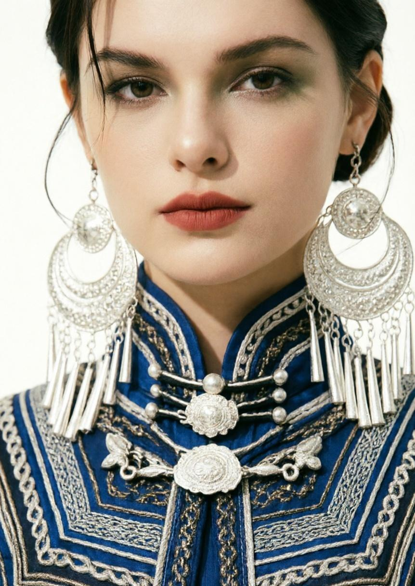
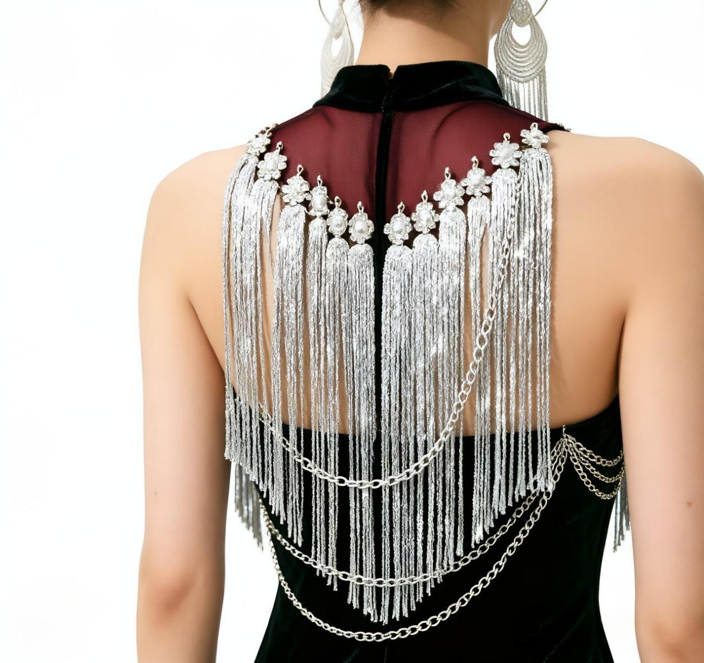
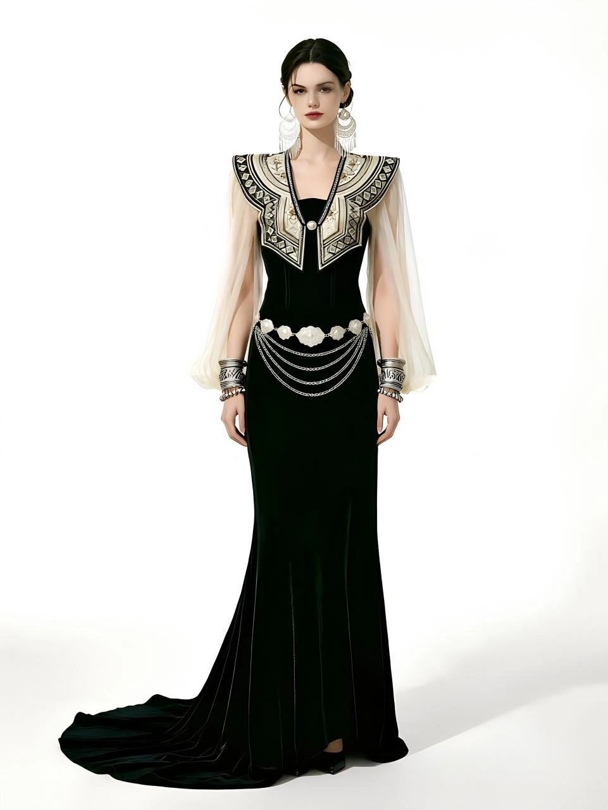
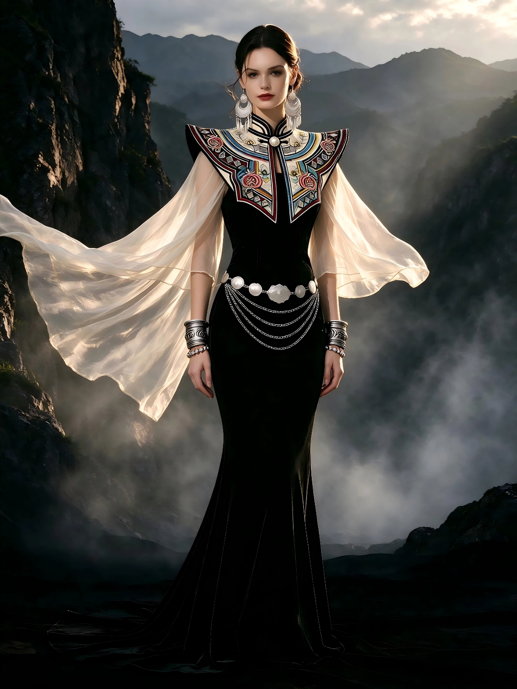

THE ART OF CONTEMPORARY EMBROIDERY
Woven into every movement.




CHAPTER 01 / INTO INDIGO
A deeper shade of craft.

CHAPTER 02 / SILVER IN MOTION
Silver follows every move.
一针一线，皆有来处。 JIACAI / IN DETAILS


从彝绣花卉与几何纹样中拾取灵感，让绣线、轻纱与银饰，在步履之间相映。